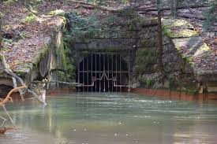

The Jeddo Mine Tunnel
Legacy infrastructure, mine hydrology, and a modern water-quality research opportunity.
Read Brief →Pennsylvania & the Appalachian Region
Researching Water Quality · Protecting Ecosystems · Advancing Restoration
Keystone Water Initiative is an independent research-driven effort focused on the environmental challenges shaping Pennsylvania’s watersheds. From acid mine drainage and industrial contamination to habitat loss and aging infrastructure, we use science, engineering, and public education to investigate threats, protect ecosystems, and advance meaningful restoration.
Who We Are
Keystone Water Initiative is an independent environmental engineering effort focused on water quality, watershed restoration, legacy pollution, and public education across Pennsylvania and the Appalachian region.
We investigate overlooked environmental issues, translate technical findings into public understanding, and promote science-based solutions for healthier watersheds and communities.
Science and data are at the core of everything we do.
Making complex environmental issues clear and accessible.
Applying practical solutions for long-term watershed recovery.

Healthy watersheds. Stronger communities. A better future.
Our Latest Work
Explore research briefs, technical features, and public updates on Pennsylvania’s critical water issues.

Legacy infrastructure, mine hydrology, and a modern water-quality research opportunity.
Read Brief →